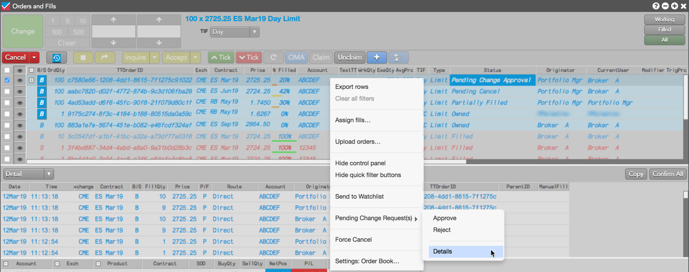
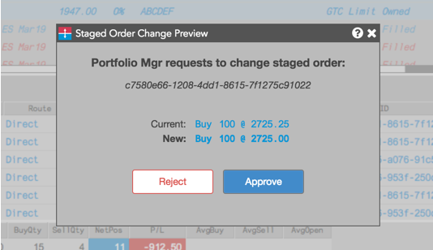
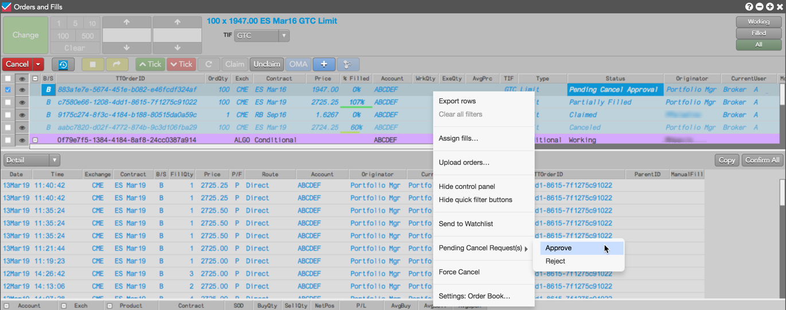

As an owner of a care order, you can use the Order Book to approve or reject a cancel or change request.
If you are currently the owner of a care order and receive a change request from the originator, the order remains in the Pending Change Approval state until you approve or reject the request. No child orders can be entered for the parent care order in this state.
To approve or reject a change request:
Click Pending Change Request(s) in the context menu and click Details.


If approved, the order price or quantity is changed in the originator's and owner's Order Book. If rejected, the Status column shows the previous status (e.g., Partially Filled).
If you are currently the owner of a care order and you receive a cancel request, the order remains in the Pending Cancel Approval state until you approve or reject the request. No child orders can be entered for the parent care order in this state.
To approve or reject a cancel request:
Click Pending Cancel Request(s) in the context menu and click Approve or Reject.
Note: When you click Approve for a cancel, the care parent and child orders are canceled. When you click Reject, the care order status from the Order Book will return to Working.
